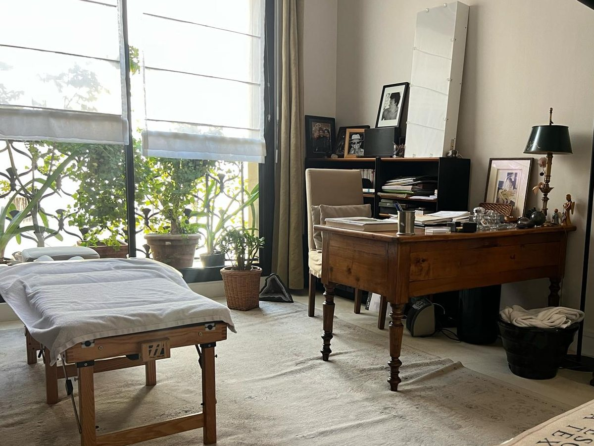

Clinical assessment
Analysis of your posture, mobility and imbalances in the musculoskeletal system.
Chiropractor in Paris 8th · Golden Triangle
A global and personalized approach to help you move better, feel better, live better.
Every day by appointment: +33 6 75 13 41 50

Over 30 years of practice
For more than thirty years, I have cared for patients of all ages in Paris, from newborns to seniors, whether they suffer from back, neck or joint pain or simply want to feel better in their body.
Every session starts with listening. I take the time to understand your history, your daily life and your needs before treating you with gentle, precise techniques.
My approach
Analysis of your posture, mobility and imbalances in the musculoskeletal system.
Gentle, precise techniques to restore mobility and reduce tension.
Supports the nervous system and the coordination of your body’s functions.
Based on your needs: pain relief, posture, stress, fatigue, sport, mobility.
For a healthier, more active body and a calmer mind.
Who I see
Neck, mid back, lower back, coccyx: relieve pain and move freely again. Shoulder tension, posture, desk work.
B.E.S.T. relaxation technique and applied kinesiology to release built-up tension.
Support throughout pregnancy with the Webster technique, a gentle approach to the pelvis.
Certificate in chiropractic paediatrics. Newborn reflux, posture, school stress.
Under 6 months, French law requires a medical certificate of no contraindication.Lymphatic drainage for heavy legs, rebalancing of back tension.
Preparation, recovery and joint mobility, whatever your level.
No referral is needed to see a chiropractor in France. Chiropractic care does not replace medical advice: if in doubt, I will refer you to your doctor.
What to expect
We talk about your pain, your lifestyle and your medical history.
I assess your posture and mobility, then treat you with techniques suited to your body.
You leave with simple advice to make the benefits last in daily life.
The practice

Location
Paris 8th, Golden TriangleThe exact address is given when you book.
Appointments
+33 6 75 13 41 50Every day, by appointment · in English or French
Fee
€100 per session45 min to 1 hour · insurance receipt on request
Payment
Cheque, cash or bank transferCards are not accepted.
Frequently asked questions
No. You can book an appointment directly.
Chiropractic care is not covered by the French national health system, but many private insurers and French “mutuelles” reimburse all or part of the sessions. A receipt for your insurance is provided on request.
Yes, I see patients of all ages and hold a certificate in chiropractic paediatrics. For babies under 6 months, French law requires a medical certificate of no contraindication.
By cheque, in cash or by bank transfer. Cards are not accepted.
Any recent scans or reports (X-rays, MRI) and comfortable clothing.